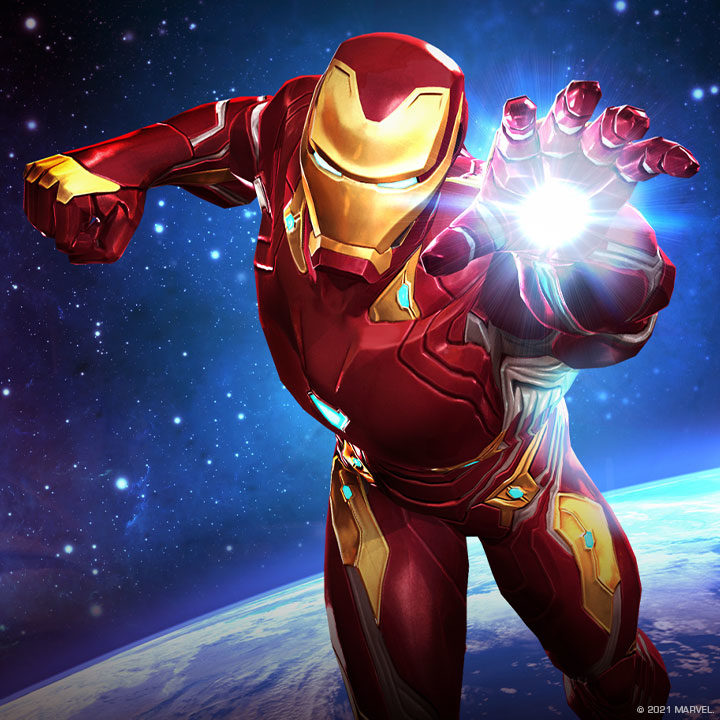
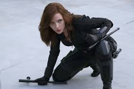
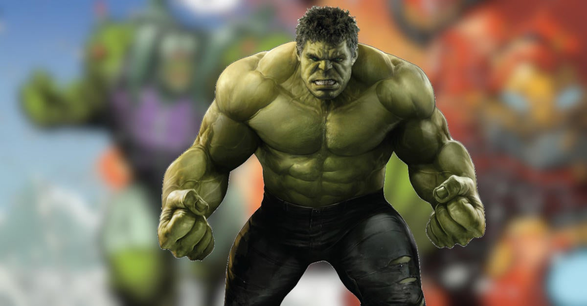

Iron Man:
When billionaire industrialist Tony Stark dons his sophisticated steel-mesh armor, he becomes a living high-tech weapon - the world's greatest fighting machine. Tony has primed his ultra modern creation for waging state of the art campaigns, attaining sonic flight, and defending the greater good! He is the Armored Avenger - driven by a heart that is part machine, but all hero! He is the INVINCIBLE IRON MAN!
Iron Man's Powers and Abilities:
Wears modular arc reactor-powered Iron Man armor, granting superhuman strength & durability, the ability to fly & project Repulsor blasts
Armor is also outfitted with complex tech, including a cutting-edge artificial intelligence, sophisticated sensor systems & other gadgetry
Genius-level intellect, with particular aptitude in invention & engineering.
For more inforamtion click here..
Captain America:

During WWII, the patriotic Steve Rogers was offered a place in the military's top operation: Rebirth. Injected with an experimental super-serum, Rogers emerged from the treatment with heightened endurance, strength, and reaction time. With extensive training and an indestructible Vibranium shield, Rogers soon became the country's ultimate weapon: CAPTAIN AMERICA! Though frozen in ice during a climactic battle toward the end of the war, Rogers was discovered and revived decades later. Now the living legend continues the war against evil in modern times as a member of The Avengers!
Captain American's Powers and Abilities:
Peak physical condition, with heightened strength, endurance & agility
Master hand-to-hand fighter
Skilled military leader & strategist
Equipped with virtually indestructible Vibranium shield.
For more inforamtion click here..
Thor:

Nordic legend tells the tale of the son of Odin, the heir to the throne of Asgard - he is THOR, renowned as the mightiest hero of mythology! Thor's strength, endurance, and quest for battle are far greater than his Asgardian brethren. The mighty Thor wields an enchanted Uru hammer, Mjolnir, and is master of thunder and lightning.
Thor's Powers and Abilities:
Superhuman strength, speed, endurance & resistance to injury
Member of the otherworldly & virtually immortal Asgardian race
Wields the enchanted Uru-forged hammer Mjolnir, which grants mastery over the elements of thunder & lightning, as well as the ability to fly & open interdimensional gateways.
For more inforamtion click here..
Black Widow:
Natasha Romanoff is the super-spy known as the Black Widow! Trained extensively in the art of espionage and outfitted with state-of-the-art equipment, Black Widow's combat skills are virtually unmatched. One of S.H.I.E.L.D's most valuable agents, she has carried out numerous black-ops missions and has recently been assigned by Director Nick Fury to keep an eye on the Avengers.
Black Widow's Powers and Abilities:
Master in the covert arts of espionage, infiltration & subterfuge
Expert martial artist, with exceptional agility & athletic ability
Utilizes advanced weaponry including custom stun batons & "Widow's Bite" bracelets capable of stunning enemies with electrical discharges.
For more inforamtion click here..
Hulk:
A massive dose of gamma radiation transformed the brilliant but meek scientist Bruce Banner's DNA, awakening the hidden, adrenaline-fed hero in his genes... HULK! A hero of few words and incredible strength, the Hulk has long been pursued by those who want to use his immense power for their own purposes, or by those who thought the Jade Giant's anger was too dangerous to be controlled. Now, as a member of the Avengers, Hulk helps smash the unimaginable threats that no Hero could face alone, hoping to at least prove to the world that he is the strongest HERO there is!
Hulk's Powers and Abilities:
Incredible superhuman strength, durability, and healing factor
Becomes more powerful as anger increases
As Banner, possesses a genius-level intellect & is an expert in multiple scientific fields, particularly the studies of physics & radiation.